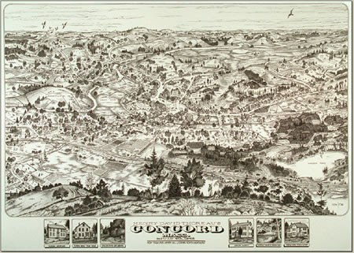

Obstacles and resistance to Thoreau's Ideas
Despite his eventual recognition as a major American thinker, Henry David Thoreau faced significant challenges during his lifetime, especially because few people valued his work. at the time
Social Ostracism
Thoreau's refusal to conform with mainstream society often labeled him as an outsider and hermit. During his time at Harvard University, he was known for being a loner and solitary. In Concord, his hometown, his unconventional lifestyle choices—working little, spending most of his time in nature—made him appear unambitious. People would wonder what this Harvard graduate was doing sauntering around and not working. His two-year stay at Walden Pond further cemented his reputation as a hermit, evidenced by the fact that Thoreau originally started Walden because so many townspeople were curious about what he was doing.
Poor Reception of Published Works
Another challenge Thoreau faced was the lack of recognition for his published works. A Week on the Concord and Merrimack Rivers sold a mere 220 copies, and the publishers dumped the remaining 700 on his doorstep. Even Walden only sold 2,000 copies after five years. The lack of sales made it difficult for him to focus on writing while supporting himself and his family.
Personal Troubles
The death of his older brother, John Thoreau, also had a deep emotional impact on him. They shared a close bond, and A Week on the Concord and Merrimack Rivers was largely written in his memory. He also struggled with health issues, including chronic respiratory problems. It certainly did not help that he spent most of his time outdoors as well. It is also likely he had tuberculosis years before his death. A year before his death, he took a trip to Minnesota with Horace Mann, Jr., in an attempt to regain his health.
"Modern Challenges to His Ideas
In today's world, Thoreau's ideals on simple living are challenged by the colossal growth of consumer capitalism and digital technology. Modern society encourages endless consumption and a fast-paced, flashy lifestyle—the very nature of which stands against Thoreau's beliefs in intentional living and meaning beyond materialistic possessions.